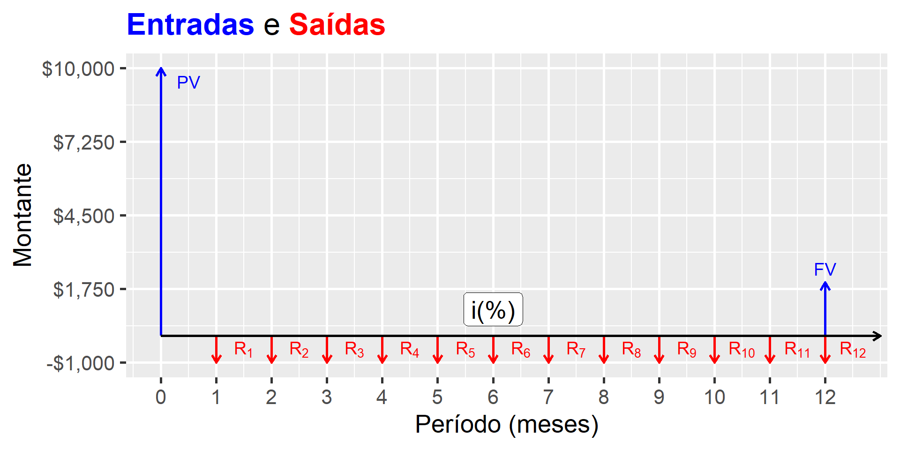
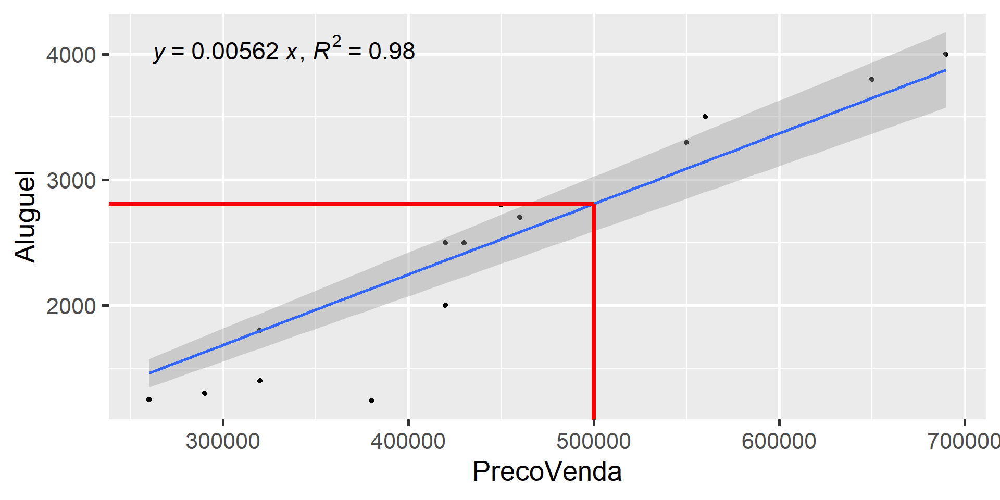
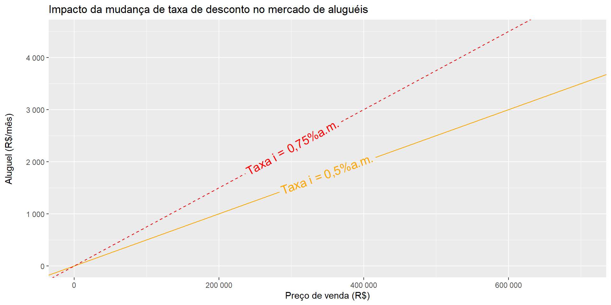

| n | 1% | 2% | 3% | 4% | 5% | 6% | 7% | 8% | 9% | 10% |
|---|---|---|---|---|---|---|---|---|---|---|
| 1 | 1.0100 | 1.0200 | 1.0300 | 1.0400 | 1.0500 | 1.0600 | 1.0700 | 1.0800 | 1.0900 | 1.1000 |
| 2 | 0.5075 | 0.5150 | 0.5226 | 0.5302 | 0.5378 | 0.5454 | 0.5531 | 0.5608 | 0.5685 | 0.5762 |
| 3 | 0.3400 | 0.3468 | 0.3535 | 0.3603 | 0.3672 | 0.3741 | 0.3811 | 0.3880 | 0.3951 | 0.4021 |
| 4 | 0.2563 | 0.2626 | 0.2690 | 0.2755 | 0.2820 | 0.2886 | 0.2952 | 0.3019 | 0.3087 | 0.3155 |
| 5 | 0.2060 | 0.2122 | 0.2184 | 0.2246 | 0.2310 | 0.2374 | 0.2439 | 0.2505 | 0.2571 | 0.2638 |
| 6 | 0.1725 | 0.1785 | 0.1846 | 0.1908 | 0.1970 | 0.2034 | 0.2098 | 0.2163 | 0.2229 | 0.2296 |
Avaliação de Aluguéis
Parte 01
Luiz Fernando Palin Droubi
2024-11-24
Introdução
Aluguéis são essenciais para a compreensão do mercado imobiliário
Fonte: Adaptada de Malpezzi and Wachter (2002). Estoque Fluxo Riqueza Renda Dívida Pública Déficit Público Ação Dividendo Valor de um casa Aluguel de uma casa Os imóveis são bens heterogêneos:
- Assim como utilizamos os imóveis para morar
- Utilizamos os imóveis para auferir renda imobiliária
- Assim, os imóveis são bens de consumo (“service logement”, de acordo com (GRANELLE 1998; apud Lacerda and Abramo 2020))
- Mas também são “bien d’investissement” (Idem)
Relação entre Estoque e Fluxo:
Figure 1: Um Fluxo de Caixa Simples
Matemática Financeira
Essencial de Matemática Financeira
- Valor Presente Líquido de um investimento:
\[ VPL = -I + \sum_{t=1}^T \frac{R_t - C_t}{(1+i)^t} \qquad(1)\]
- Quando o fluxo de caixa é constante, o VPL também pode ser escrito em função do Fator de Recuperação do Capital (FRC):
\[ VPL = -I + \frac{R_l}{FRC(i,T)} \qquad(2)\]
- Pode-se considerar, ainda, um valor residual \(D\) ao final do período de análise:
\[ VPL = -I + \frac{R_l}{FRC(i,T)} + D.FAC(i,T) \qquad(3)\]
- \[FRC(i, T) = \frac{i.(1+i)^T}{(1+i)^T-1} \qquad(4)\]
- \[FAC(i,T) = \frac{1}{(1+i)^T} \qquad(5)\]
Essencial de Matemática Financeira
FRC e FAC podem ser tabelados!
FRC:
- FAC:
| n | 1% | 2% | 3% | 4% | 5% | 6% | 7% | 8% | 9% | 10% |
|---|---|---|---|---|---|---|---|---|---|---|
| 1 | 0.9901 | 0.9804 | 0.9709 | 0.9615 | 0.9524 | 0.9434 | 0.9346 | 0.9259 | 0.9174 | 0.9091 |
| 2 | 0.9803 | 0.9612 | 0.9426 | 0.9246 | 0.9070 | 0.8900 | 0.8734 | 0.8573 | 0.8417 | 0.8264 |
| 3 | 0.9706 | 0.9423 | 0.9151 | 0.8890 | 0.8638 | 0.8396 | 0.8163 | 0.7938 | 0.7722 | 0.7513 |
| 4 | 0.9610 | 0.9238 | 0.8885 | 0.8548 | 0.8227 | 0.7921 | 0.7629 | 0.7350 | 0.7084 | 0.6830 |
| 5 | 0.9515 | 0.9057 | 0.8626 | 0.8219 | 0.7835 | 0.7473 | 0.7130 | 0.6806 | 0.6499 | 0.6209 |
| 6 | 0.9420 | 0.8880 | 0.8375 | 0.7903 | 0.7462 | 0.7050 | 0.6663 | 0.6302 | 0.5963 | 0.5645 |
Essencial de Matemática Financeira
- Exemplo 1:
- Compra de um carro por R$ 95.000,00 à vista, deixando de pagar aluguel de R$ 24.000,00/ano.
- Em 5 anos, a uma TMA de 8,0% a.a., este investimento se paga?
- Desconsiderar seguros, IPVA, etc.
- \(I = 95.000,00\), \(R = 24.000,00\), \(i=8,00\% a.a.\), \(T=5\)
- \(FRC(8\%, 5) = \frac{0,08.(1+0,08)^{5}}{(1+0,08)^{5}-1} \approx 0,25\)
- \(VPL = -95.000 + 24.000/0,25 = -95.000 + 96.000\)
- \(VPL \approx - 1.000,00\)
- Exemplo 2:
- Mesmo exemplo anterior, considerando que o carro pode ser vendido a 60% do valor de aquisição ao final do período.
- Considerar também um custo de R$ 12.000,00 por ano em manutenções, IPVA, etc.
- \(I = 95.000,00\), \(R = 24.000,00\), \(C = 12.000\), \(i=8,00\% a.a.\), \(T=5\), \(VF = 57.000\)
- \(FAC(8\%,5) = 1/(1 +.08)^5 =0,6806\)
- \(VPL = -95.000 + (24.000-12.000)/0,25 + 57.000\times0,6806 \approx -95.000 + 48.000 + 38.800\)
- \(VPL \approx -8.200,00\)
Essencial de Matemática Financeira
- Exemplo 3:
- Compra de uma geladeira de R$ 4.000,00 em 12x R$ 400,00, com uma TMA igual a 10,0 % a.a.:
- \(I = -4.000\), \(R = -400\), \(i = (1+0,01)^{1/12} - 1 = 0,80\% a.m.\)
- \(FRC(0,8\%, 12) = \frac{0,008.(1+0,008)^{12}}{(1+0,008)^{12}-1} = 0,0877\)
- \(VPL = -(-4.000) + (-400)/0,0877 = 4.000 - 4.561,00\)
- \(VPL \approx -560,00\)
- Compra de uma geladeira de R$ 4.000,00 em 12x R$ 400,00, com uma TMA igual a 10,0 % a.a.:
- Exemplo 4:
- Considerar que com a nova geladeira haverá uma economia de R$50,00 mensais com energia:
- \(I = -4.000\), \(R = -400\), \(C = -50,00\), \(i = (1+0,08)^{1/12} - 1 = 0,80\% a.m.\)
- \(FRC(0,8\%, 12) = 0,0877\)
- \(VPL = -(-4.000) + [-400 - (-50)]/0,0877 = 4.000 - 350/0,0877\)
- \(VPL \approx 10,00\)
- Considerar que com a nova geladeira haverá uma economia de R$50,00 mensais com energia:
Reflexões
- O importante é compreender o problema, ao invés de apenas aplicar as fórmulas
- No caso do carro, a ideia geral não é um cálculo exato, mas apenas criar uma percepção se vale a pena comprar ou alugar um carro
- Dificilmente os valores do fluxo de caixa real serão idênticos aos previstos
- O problema pode ser posto de maneira simplificada, inicialmente.
- Após uma primeira conta para aferir a ordem de grandeza das parcelas, o problema pode ser feito mais complexo
- No caso da geladeira, o importante é perceber:
- A decisão pode ser entre comprar a geladeira agora de forma parcelada, ou guardar o dinheiro das prestações para comprar depois, à vista!
- Se a pessoa opta por comprar a geladeira à vista após o período de 12 meses, ela deixou de economizar R$ 50,00 mensais com a conta de energia durante este período
- Seria um erro desconsiderar esta economia “operacional”
- A decisão entre comprar agora ou comprar depois depende também de outras coisas. Quem garante que a geladeira estará por R$ 4.000,00 daqui a 12 meses?
- No caso do carro, a ideia geral não é um cálculo exato, mas apenas criar uma percepção se vale a pena comprar ou alugar um carro
- A TMA é exclusividade do empreendedor/indivíduo!
- Se o cidadão tem guardado apenas R$ 4.000,00, ele só irá comprar a geladeira à vista se ele tiver um ótimo desconto!
- Se o cidadão possui uma boa poupança e R$ 4.000,00 não é para ele um montante significativo, então ele pode comprar a vista, por mínimo que seja o desconto.
Reflexões
- Machline (1966, 60):
Como calcular a taxa de retorno? Ela será, em geral, igual, no mínimo, à taxa de retorno que a empresa desfruta em suas operações habituais. Se o empresário achar que as oportunidades de lucro elevado se estão esgotando, ele pode contentar-se, em determinado investimento, com uma taxa de retorno inferior à que costuma obter. De qualquer maneira, ele é o único juiz da taxa de retorno que deseja. Se o empresário achar o negócio seguro, poderá contentar-se com uma taxa de retorno pequena, igual ou pouco superior à taxa de juros cobrada, na praça, para empréstimo de dinheiro. Se o empresário considerar o empreendimento arriscado, desejará uma taxa de retorno bem mais elevada. A taxa de retorno, em suma, depende das diretrizes financeiras da empresa; terá um valor eminentemente individual, variando com a conjuntura econômica, no momento de tomar a decisão de investir, e refletindo a personalidade e a atitude do empresário.
Essencial de Matemática Financeira
Para períodos muito longos (\(n \rightarrow \infty\)), \(FRC = i\)!
Exemplo: taxa de 10%a.a., durante 30/40/50 anos, calcule a FRC:
- \(FRC(10\%,30) = \frac{10\%.(1+10\%)^{30}}{(1+10\%)^{30}-1} = \frac{10\%.17,45}{16,45} = 0,1061 = 10,61\%\)
- \(FRC(10\%,40) = \frac{10\%.(1+10\%)^{40}}{(1+10\%)^{40}-1} = \frac{10\%.45,26}{44,26} = 0,1023 = 10,23\%\)
- \(FRC(10\%,50) = \frac{10\%.(1+10\%)^{50}}{(1+10\%)^{50}-1} = \frac{10\%.117,39}{116,39} = 0,1009 = 10,09\%\)
Assim, para investimentos com FC muito longos, a equação 2 torna-se:
- \[VPL = -I + \frac{R}{i} \qquad(6)\]
Da equação 6 derivam (VPL = 0):
- O método da renda: \[V_{imóvel} = \frac{Al}{i} \qquad(7)\]
- O método da remuneração do capital: \[Al = V_{imóvel}.i \qquad(8)\]
Essencial de Matemática Financeira
Métoda da Renda
- Um imóvel tem aluguel igual a R$ 3.000,00 mensais, calcule seu valor de venda:
- \[V_{imóvel} = \frac{Al}{i} = \frac{12.3000}{6\%}=\text{ R\$ } 600.000,00\]
- Mais preciso:
- \[V_{imóvel} = \frac{Al}{i} = \frac{3000}{(1+6\%)^{1/12}-1}=\text{ R\$ } 616.326,40\]
Método da Recuperação do Capital
- Um imóvel possui VM de R$ 500.000,00, calcule o valor justo do aluguel, para uma taxa de 6% a.a.
- \[Al = V_{imóvel}.i = \frac{500.000\times6\%}{12}=\text{ R\$ } 2.500,00\]
- Mais preciso:
- \[Al = V_{imóvel}.i = 500.000\times[(1+6\%)^{1/12}-1] \approx \text{ R\$ } 2.435,00\]
Essencial de Matemática Financeira
Para calcular a renda (ou prestação de um empréstimo) sobre um valor presente de um ativo, dada uma taxa de juros \(i\), em \(n\) períodos, basta considerar \(VPL = 0\) e substituir (4) em (2):
- \(R = PV\frac{i.(1+i)^n}{(1+i)^n-1}\) ou \(R = \frac{PV.i}{1-(1+i)^{-n}}\)
- Exemplo:
- Dado um valor presente de R$ 4.000,00, a uma taxa de 0,76% a.m., calcule a prestação para pagamento em 12x:
- \(R = \frac{4000.0,76\%}{1-(1+0,76\%)^{-12}} = \frac{30,4}{1 - 0,91315} \approx 350,00\)
Para calcular o valor presente, dada a renda, os juros e número de prestações:
- \(PV = R\frac{(1+i)^n-1}{i.(1+i)^n}\) ou \(PV = \frac{R.(1-(1+i)^{-n})}{i}\)
- Exemplo:
- Dada uma prestação de R$ 1.000 mensais, a uma taxa de juros de 0,64% a.m., calcular o valor presente, considerando n = 60
- \(PV = \frac{1.000.(1-(1+0,64\%)^{-60})}{0,64\%}=\frac{1.000.(1-0,6819)}{0,64\%}\)
- \(PV \approx 49.700,00\)
O período de capitalização importa!
Essencial de Matemática Financeira
Revisitando o exemplo 2:
- \(I = 95.000,00\), \(R = 2.000,00\), \(C = 1.000\), \(i=0,64\% a.m.\), \(T=60\), \(VF = 57.000\)
- \(FRC(0,64\%, 60) = \frac{0,0064.(1+0,0064)^{60}}{(1+0,0064)^{60}-1} \approx 0,02\)
- \(FAC(0,64\%, 60) \approx FAC(8\%, 5) = 0,6806\)
- \(VPL = -95.000 + \frac{2.000-1.000}{0,02} + 57.000\times 0,6806 = -95.000 + 50.000 + 38.800\)
- \(VPL \approx -6.200,00\)
Essencial de Matemática Financeira
Taxa interna de retorno
Dados os valores do investimento (\(I\)), a Renda (\(R\)), o Custo (\(C\)) e o número de períodos (\(T\)), a TIR é o valor da taxa \(i\) que zera o VPL na equação 1:
- \[0 = -I + \sum_{t=1}^T \frac{R_t - C_t}{(1+TIR)^t} \qquad(9)\]
Se \(TIR > TMA\): aceita-se o projeto!
Caso contrário, rejeita-se!
A TIR é muito utilizada nas empresas para comparar diferentes projetos
Por exemplo:
- Construtora pode investir R$ 1.000.000,00 num terreno cujo VGV estimado é de R$ 10.000.000,00, com prazo de entrega de 5 anos
- Ou pode investir R$ 800.000,00 em outro terreno cujo VGV estimado é de R$ 8.000.000,00, com prazo de entrega de 4 anos
- Considere que as receitas sejam constantes, anualmente.
- Considere que o lucro sobre as receitas seja de 20%
- Se a TMA da construtora é de 15% a.a., qual projeto escolher?
Essencial de Matemática Financeira
Comparação por VPL
- Cálculo dos FRC:
- \(FRC(15\%, 5) = \frac{0,15.(1+0,15)^5}{(1+0,15)^5-1} = 0,2983\)
- \(FRC(15\%, 4) = \frac{0,15.(1+0,15)^4}{(1+0,15)^4-1} = 0,3503\)
- Cálculo dos VPL:
- \[VPL_1 = -1.000.000 + \frac{20\% 2.000.000}{0,2983} = \frac{400.000}{0,2983} = R\$ 340.931,90\]
- \[VPL_2 = -800.000 + \frac{20\% 2.000.000}{0,3503} = \frac{400.000}{0,3503} = R\$ 341.878,40\]
- Os dois projetos são aceitáveis! Os VPL’s são praticamente idênticos!
- Analisando os FC e os VPL, algumas pessoas podem pensar:
- “Os dois projetos são similares, porém no primeiro a construtora lucra por 1 ano a mais”
- “A construtora investe 200.000 a mais, porém fatura 25% mais e portanto lucra 400.000 a mais”!
- “Portanto, vale a pena investir 200.000 mais e fazer o projeto com maior VGV!”
Essencial de Matemática Financeira
Comparação por TIR
- Cálculos das TIR:
- \[TIR_1 \Rightarrow 0 = -1.000.000 + \sum_{t=1}^5 \frac{400.000}{(1+TIR_1)^5}\]
- \[TIR_1 = 28,65\%\]
- \[TIR_2 \Rightarrow 0 = -800.000 + \sum_{t=1}^4 \frac{400.000}{(1+TIR_1)^4}\]
- \[TIR_2 = 34,90\%\]
- \[TIR_1 \Rightarrow 0 = -1.000.000 + \sum_{t=1}^5 \frac{400.000}{(1+TIR_1)^5}\]
- Ao contrário do raciocínio falacioso do último slide, a TIR elenca o projeto 2 como o mais rentável para a construtora!
Essencial de Matemática Financeira
Indicadores: rentabilidade e lucratividade
- Lucratividade: a lucratividade é a razão do lucro líquido sobre a receita bruta:´
- Projeto 1: \[L_1 = \frac{L_{líquido}}{R_{bruta}} = \frac{400.000}{2.000.000} = 20\%/\text{ano}\]
- Projeto 2: \[L_2 = \frac{L_{líquido}}{R_{bruta}} = \frac{400.000}{2.000.000} = 20\%/\text{ano}\]
- Rentabilidade: é a razão do lucro sobre o investimento:
- Projeto 1: \[r_1 = \frac{VPL_1}{I_1}= \frac{341.000}{1.000.000} = 34,10\%\]
- Projeto 2: \[r_2 = \frac{VPL_2}{I_2}= \frac{341.000}{800.000} = 42,625\%\]
- O raciocínio é o seguinte: o VPL é o mesmo para ambos os projetos, porém no projeto 2 o investimento é menor (e retorna mais rápido)!
Comparação por TIR
- Um bom exercício para este momento é:
- Imagine que o Projeto 2 atrasou.
- Irá apresentar o mesmo resultado (20% de R$ 8.000.000,00)
- Porém, agora com prazo de 5 anos
- Calcule a nova TIR do Projeto 2.
- Compare-a à TIR inicial e à TIR do primeiro projeto
- Faça também o cálculo do novo VPL e das rentabilidades!
- Imagine que o Projeto 2 atrasou.
Avaliação de Aluguéis
Método da Renda
O método da Renda é um dos métodos reconhecidos pela ABNT (2011) para “identificar o valor de um bem”.
Em outras palavras, o método da Renda é um método para a estimação do valor de mercado de um bem imóvel.
O método da renda consiste em utilizar a renda (aluguel) que um imóvel produz fins de determinar o seu valor de mercado.
Antigamente alguns autores se referiam ao método da renda também quando utilizado para a determinação do valor justo do aluguel dos imóveis
Na atualidade, para este segundo propósito, adotou-se o termo de Método de Recuperação do Capital
Na ABNT (2011, item 11.4.2), quando utilizado o método da recuperação do capital para determinação dos aluguéis:
- Neste caso, o aluguel é determinado em função do valor do imóvel, podendo ser empregado em casos de imóveis isolados e atípicos, para os quais a utilização da comparação direta seja impraticável.
- Sua utilização exige a determinação da taxa de remuneração e do valor do imóvel.
- A taxa de remuneração deve ser objeto de pesquisa específica para cada caso, pois varia para cada tipo de imóvel, localização e, também, ao longo do tempo, dependendo da conjuntura econômica.
Método da Remuneração do Capital
- Segundo D’Amato and Alonso (2019), p. 123:
Apesar de ser método de grande aplicação, alguns estudiosos já estão percebendo a inversão “causa-efeito” da premissa de que todo imóvel vale (efeito) pela sua capacidade de produzir renda (causa). Talvez o fato de se partir do “efeito” (valor do imóvel) para se obter a “causa” (renda) conduza a resultados distorcidos da realidade, a menos que nos cálculos se apliquem múltiplos fatores corretivos; para o terreno: localização, área, testada, profundidade, formato, sub ou superaproveitamento; para a construção: áreas privativa e total, grupamento, padrão, idade, estado de conservação, distribuição entre andares e dos ambientes (layout). […] Na realidade se verifica que são dois mercados diferentes, o de venda e o de locação, com tendência, comportamentos e público alvo também diversos.
- Obs. Droubi:
- São dois mercados diferentes!
- Mas eles se equilibram!
Método da Remuneração do Capital
- É o inverso do método da renda (D’Amato and Alonso 2019, 95)!
“quando usado inversamente, para fixação de aluguéis, o método denominar-se-á da remuneração dos capitais”
- A taxa de remuneração deve ser determinada mediante pesquisa, conforme item 11.4.2 da NBR 14.653-2 (2011):
A taxa de remuneração deve ser objeto de pesquisa específica para cada caso, pois varia para cada tipo de imóvel, localização e, também ao longo do tempo, dependendo da conjuntura econômica.
Método da Remuneração do Capital
Deve-se levar em conta:
- Taxa de Vacância
- Taxas de administração
- Impostos
- Compensação pela falta de liquidez
- Manutenção e Depreciação
- Valorização
Um método é levar em conta estas variáveis na taxa de desconto:
Fonte: Composição de taxas de desconto. Fonte: D’Amato and Alonso (2019), p. 86. Tipo Terreno (% a.a.) Benfeitorias (%a.a.) Taxa básica 8,00% 8,00% Não-liquidez 1,50% 1,50% Depreciação - 1,50% Taxa de vacância - 1,00% Valorização -1,50% - TOTAL 8,00% 12,50%
Taxa composta
Uma vez obtidas as taxas de desconto para o terreno e para as benfeitorias, pode-se calcular a taxa composta:
- \(i=\frac{V_T.i_T+V_B.i_B}{V_T + V_B}\)
Com a taxa composta, os valores do terreno e do capital (benfeitorias), pode ser feito o cálculo do valor do aluguel.
Exemplo (adaptado de D’Amato and Alonso (2019), p. 87):
- \(V_T = 250.000,00\)
- \(V_B = 450.000,00\)
- \(V_I = 795.000,00\) (Fator de Comercialização \(\approx\) 14%)
- \(i = \frac{250.000.0,08+450.000.0,125}{250.000 + 450.000} = \frac{20.000 + 56.250}{700.000} = 10,89% (a.a.)\)
- Taxa ao mês: \(i_{mensal} = (1+i_{anual})^{1/12} - 1 = 0,865\%\)
- \(Al = 795.000,00.0,865\% = \text{R\$ }6.876,75/\text{mês}\)
Método da Renda com aluguel líquido
- Segundo Malpezzi and Wachter (2002):
- \[V_{imovel} = \sum_{t=0}^{T}\frac{E(R_t-C_t)}{(1+i)^t} = \sum_{t=0}^{T}\frac{E(R_l)}{(1+i)^t} \approx \frac{R_l}{i}\]
- Obs.: A valorização (\(g\)) pode ser levada em conta subtraindo-a da taxa de desconto (Malpezzi and Wachter 2002):
- \[V_{imovel} = \frac{R_l}{i-g}\]
- \(i-g\) é chamada de taxa de capitalização, ou \(c\) (cap rate)
- \[V_{imovel} = \frac{R_l}{c}\]
Método da Renda com aluguel líquido
Segundo D’Amato and Alonso (2019), p. 100, deve-se deduzir, em média, 30% do aluguel bruto!
- \[V_{imóvel} = \frac{Al}{i} = \frac{12.0,7.3000}{6\%}=\text{ R\$ } 420.000,00\]
Estimando-se uma taxa de valorização de 2% a.a.:
- \[V_{imóvel} = \frac{Al}{i} = \frac{12.0,7.3000}{6\%-2\%}=\text{ R\$ } 630.000,00\]
Pequenos ajustes fazem grande diferença no VP!
O investimento em imóveis
- Exemplo:
- Dado que um apartamento está anunciado em R$ 400.000,00
- Que a sua (investidor) TMA é igual 10% a.a.
- Que o aluguel do imóvel é R$ 3.000,00/mês
- Que a expectativa é que o aluguel se reajuste a uma taxa de 1,5% a.a.
- Que os custos (inclusive taxa de vacância) são da ordem de 30% do valor do aluguel
- Que você (investidor) considera um prazo de 30 anos para amortizar o investimento
- Quanto você pode pagar pelo apartamento?
- Solução:
- \[FRC(8,5\%, 30) = \frac{8,5\%.(1+8,5\%)^{30}}{(1+8,5\%)^{30}-1} = 0,09305\]
- \[VPL = -400.000 + \frac{12.(3000-900)}{9,305\%}\]
- \[VPL = -400.000 + 270.822,10 = -129.177,90\]
- R.: R$ 270.000,00
O investimento em imóveis
A casa própria
- Suponha que:
- Uma casa está anunciada por R$ 500.000,00
- Você pode financiá-la, mediante entrada de 20% (R$ 100.000)
- Após adquirí-la, você pagará ao banco uma parcela de R$ 2.000,00 mensais por 30 anos
- O aluguel da casa é R$ 3.000,00 mensais
- A sua TMA é de 10% a.a.
- Você compra a casa?
- Considere que não há valor residual e despreze os custos de manutenção da casa, inflação, etc.!
- Solução:
- \[FRC(10\%, 30) = \frac{10\%.(1+10\%)^{30}}{(1+10\%)^{30}-1} = 10,61\%\]
- \[VPL = -100.000 + \frac{12.(3000-2000)}{10,61\%}\]
- \[VPL = -100.000 + \frac{12.000}{10,61\%} = -100.000 + 113.100,80 = 13.100,80\]
O investimento em imóveis
A casa própria (2)
- Suponha que:
- Um terreno está anunciado por R$ 100.000,00
- Você quer construir uma casa com orçamento de R$ 400.000,00
- Você pode fazer ATC, mediante entrada de 20% (R$ 100.000)
- Você pagará ao banco inicialmente uma parcela de R$ 5.000,00 mensais
- Porém, ao longo de 30 anos esta parcela será reduzida a uma taxa de 2,5% a.a.
- O aluguel de uma casa similar é R$ 4.000,00 mensais
- Porém estima-se que este aumentará a uma taxa de 2,5% a.a.
- A sua TMA é de 10% a.a.
- Você estima uma valor residual, ao final de 30 anos, de 20% para o imóvel.
- Os terrenos não costumam ser depreciados, nem legalmente, nem do ponto de vista econômico, pois \(C - L = 0\), em geral, isto é, o seu valor se mantém constante ou até aumenta (Machline 1966, 58).
- Você compra a casa?
- Despreze os custos de manutenção e outras taxas!
O investimento em imóveis
A casa própria (2)
- Solução:
- \[FRC_R = FRC(10\% - 2,5\%, 30) = \frac{7,5\%.(1+7,5\%)^{30}}{(1+7,5\%)^{30}-1} = = 0,08467 = 8,47\%\]
- \[FRC_C = FRC(10\% + 2,5\%, 30) = \frac{12,5\%.(1+12,5\%)^{30}}{(1+12,5\%)^{30}-1} = 0,1288 = 12,88\%\]
- \[FCA(10\%, 30) = \frac{1}{(1+10\%)^{30}} = 0,0573 = 5,73\%\]
- \[VPL = - 100.000 + \frac{12.(4.000)}{8,47\%} + \frac{12.(-5.000)}{12,88\%} + 20\%.500.000.5,73\%\]
- \[VPL = 100.000,00 + \frac{48.000}{8,47\%} + \frac{-60.000}{12,88\%} + 100.000.5,73\%\]
- \[VPL = -100.000 + 566.706 - 465.838,50 + 5.730\]
- \[VPL \approx 6.600,00\]
O investimento em imóveis
Levando em conta a inflação
- Segundo Machline (1966, 73):
- \[i = \frac{e-d}{1+d}\]
- \(i\) é a taxa real de juros
- \(e\) é a taxa aparente de juros
- \(d\) é a taxa de inflação
- \[i = \frac{e-d}{1+d}\]
- Exemplo (Machline 1966, 78):
- Aquisição de um terreno: R$ 5000.000,00 (1960)
- Venda do terreno: R$ 45.000.000,00 (1964)
- Dado que a taxa de inflação foi \(d = 50\% \text{ a.a.}\), qual o retorno real?
- Solução:
- Taxa aparente: \(e = (45.000/5.000)^{1/4}-1 = 73,2\% \text{ a.a.}\)
- Taxa real: \[i = \frac{0,732 -0,50}{1+0,50} = \frac{0,232}{1,5} = 15,5\% \text{ a.a.}\]
O investimento em imóveis
- Deve-se levar em conta que cada pequeno ajuste, seja na taxa, seja na renda esperada, leva a grandes diferenças no valor do imóvel!
- Isto é esperado, porque o fluxo de caixa é muito extenso!
- Se a sensibilidade é alta, o que isso significa?
- Que o risco do investimento é alto!
Aparte: Administração de carteiras
No mercado de capitais existe um almoço grátis: a diversificação!
Sejam dois ativos, A e B:
- Ambos tem preço de aquisição, na data 0, igual a 100;
- O investidor adquire R$ 500.000,00 em ativos, sendo 50% do ativo A e 50% do ativo B
- No ano 1, o ativo A valoriza 50%, enquanto o ativo B desvaloriza 50%
- Ao final do primeiro ano, o investidor faz o rebalanceamento da carteira
- No ano 2, o ativo A desvaloriza 33,333% e o ativo B valoriza 100%
- Calcule o valor da carteira ao fim do segundo período
Aparte: Administração de carteiras (2)
Solução:
Rebalanceamento de carteiras de investimento. Período Quant. A Preço A Quanto. B Preço B TOTAL 0 2.500 100 2.500 100 500.000 1 2.500 150 2.500 50 500.000 2 1.666 100 5.000 100 666.600 É possível fazer isto no mercado imobiliário?
- Não, devido aos altos custos de transação!
- Mercado imobiliário não é um mercado perfeito!
Aplicações
Método da Renda
| Id | Área (m2) | Aluguel (R$/mês) | Preco de Venda (R$) | Vacância (%) | Despesas Operacionais (R$) |
|---|---|---|---|---|---|
| 1 | 115 | 580 | 70.000 | 7 | 110 |
| 2 | 154 | 640 | 80.000 | 8 | 120 |
| 3 | 132 | 610 | 75.000 | 8 | 125 |
| 4 | 105 | 550 | 71.500 | 5 | 135 |
| 5 | 140 | 625 | 77.000 | 7 | 120 |
| 6 | 135 | 630 | 71.000 | 8 | 130 |
| 7 | 117 | 600 | 75.000 | 6 | 130 |
- Calcular: valor de mercado de um imóvel com aluguel de R$ 600,00.
- Considerar:
- Taxa de Vacância: 7%; Despesas Operacionais: R$ 125,00/mês
Método da Renda
| Id | Área (m2) | Aluguel (R$/mês) | Preco de Venda (R$) | Vacância (R$) | Despesas Operacionais (R$) | Renda Líquida (R$) | Rentabilidade (%) |
|---|---|---|---|---|---|---|---|
| 1 | 115 | 580 | 70.000 | 40,60 | 110 | 429,40 | 0,61 |
| 2 | 154 | 640 | 80.000 | 51,20 | 120 | 468,80 | 0,59 |
| 3 | 132 | 610 | 75.000 | 48,80 | 125 | 436,20 | 0,58 |
| 4 | 105 | 550 | 71.500 | 27,50 | 135 | 387,50 | 0,54 |
| 5 | 140 | 625 | 77.000 | 43,75 | 120 | 461,25 | 0,60 |
| 6 | 135 | 630 | 71.000 | 50,40 | 130 | 449,60 | 0,63 |
| 7 | 117 | 600 | 75.000 | 36,00 | 130 | 434,00 | 0,58 |
Rentabilidade média: 0,58% a.m.
Valor da Vacância: 7%*600 = R$ 42,00 /mês
Despesas: R$ 125,00/mês
Valor do imóvel: \[V_{imovel} = \frac{R - C}{i} = \frac{600-42-125}{0,58\%}=\text{R\$ }74.655,17\]
Método da Remuneração do Capital
- Exemplo (D’Amato and Alonso 2019, 94):
| Id | Preco de Venda (R$) | Aluguel (R$/mês) |
|---|---|---|
| 1 | 420.000 | 2.000 |
| 2 | 450.000 | 2.800 |
| 3 | 320.000 | 1.400 |
| 4 | 260.000 | 1.250 |
| 5 | 460.000 | 2.700 |
| 6 | 690.000 | 4.000 |
| 7 | 650.000 | 3.800 |
| 8 | 380.000 | 1.240 |
| 9 | 550.000 | 3.300 |
| 10 | 560.000 | 3.500 |
| 11 | 420.000 | 2.500 |
| 12 | 320.000 | 1.800 |
| 13 | 430.000 | 2.500 |
| 14 | 290.000 | 1.300 |
Método da Remuneração do Capital
- Exemplo (D’Amato and Alonso 2019, 94):
| Id | Preco de Venda (R$) | Aluguel (R$/mês) | Taxa Mensal (%) | Taxa Anual (%) |
|---|---|---|---|---|
| 1 | 420.000 | 2.000 | 0,48 | 5,87 |
| 2 | 450.000 | 2.800 | 0,62 | 7,73 |
| 3 | 320.000 | 1.400 | 0,44 | 5,38 |
| 4 | 260.000 | 1.250 | 0,48 | 5,92 |
| 5 | 460.000 | 2.700 | 0,59 | 7,28 |
| 6 | 690.000 | 4.000 | 0,58 | 7,18 |
| 7 | 650.000 | 3.800 | 0,58 | 7,25 |
| 8 | 380.000 | 1.240 | 0,33 | 3,99 |
| 9 | 550.000 | 3.300 | 0,60 | 7,44 |
| 10 | 560.000 | 3.500 | 0,62 | 7,76 |
| 11 | 420.000 | 2.500 | 0,60 | 7,38 |
| 12 | 320.000 | 1.800 | 0,56 | 6,96 |
| 13 | 430.000 | 2.500 | 0,58 | 7,20 |
| 14 | 290.000 | 1.300 | 0,45 | 5,51 |
Método da Remuneração do Capital
One Sample t-test
data: df$TaxaAnual
t = 22.276, df = 13, p-value = 9.712e-12
alternative hypothesis: true mean is not equal to 0
80 percent confidence interval:
6.230468 7.034485
sample estimates:
mean of x
6.632477 - Para avaliar um imóvel com VM de R$ 500.000,00:
- \(Al =500.000.6,63\%/12 \approx\) R$ 2.750,00/mês
- \(Al =500.000.6,23\%/12 \approx\) R$ 2.600,00/mês
- \(Al =500.000.7,03\%/12 \approx\) R$ 2.900,00/mês
- Valor locativo estimado: R$ 2.750,00 [2.600,00; 2.900,00]
Em uma perícia, faça isto:
One Sample t-test
data: df$TaxaMensal
t = 22.808, df = 13, p-value = 7.196e-12
alternative hypothesis: true mean is not equal to 0
80 percent confidence interval:
0.5044509 0.5679332
sample estimates:
mean of x
0.5361921 - Para avaliar um imóvel com VM de R$ 500.000,00:
- \(Al =500.000.0,54\% \approx\) R$ 2.700,00/mês
- \(Al =500.000.0,50\% \approx\) R$ 2.500,00/mês
- \(Al =500.000.0,57\% \approx\) R$ 2.850,00/mês
- Valor locativo: R$ 2.700,00 [2.500,00; 2.800,00]
Método da Remuneração do Capital
- Mesmos dados de D’Amato and Alonso (2019), p. 94:

Método da Remuneração do Capital
- Mesmos dados, passando pela origem:

Para entender

Para entender
Retirando um outlier

Para entender
- Importante observar: este mercado é influenciado totalmente pelas taxas de juros. É um mercado de bens de investimento, e não um mercado de consumo!
- Mas os imóveis não são apenas bens de investimento!
Para entender
Economia Urbana
Referências
ABNT. 2011. NBR 14653-2: Avaliacao de Bens – Parte 2: Imoveis Urbanos. Rio de Janeiro: Associacao Brasileira de Normas Tecnicas.
D’Amato, Mônica, and Nelson Roberto Pereira Alonso. 2019. Avaliação de Aluguéis. Edited by Leud. 4th ed. São Paulo.
GRANELLE, J-J. 1998. Économie Immobilière. Analyses Et Applications. Paris: Economica.
Lacerda, Norma, and Pedro Abramo. 2020. “O Mercado de Aluguel de Imóveis Comerciais e de Serviços Em Centros Históricos Brasileiros: Implicações Da Conservação Inovadora e Da Destruição Aniquiladora Nos Preços Dos Bens Patrimoniais.” Revista Brasileira de Estudos Urbanos e Regionais 22 (E202027pt): 1–27. https://doi.org/https://doi.org/10.22296/2317-1529.rbeur.202027pt.
Machline, Claude. 1966. “Análise de Investimentos e Inflação.” Revista de Administração de Empresas, no. 18: 51–126. https://doi.org/10.1590/S0034-75901966000100002.
Malpezzi, Stephen, and Susan M. Wachter. 2002. “The Role of Speculation in Real Estate Cycles.” https://doi.org/https://dx.doi.org/10.2139/ssrn.2585241.